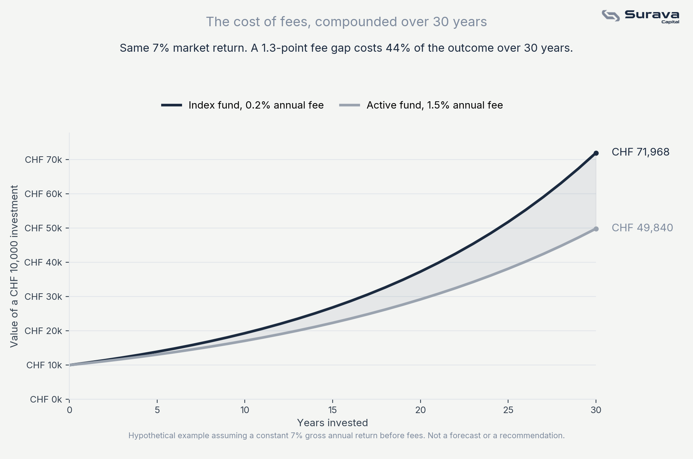

What an index fund actually is
An index fund is a fund that simply buys every company in a given market index, in proportion to their size, and holds them. The Swiss Market Index, for example, tracks the 20 largest listed Swiss companies. A fund tracking the SMI does not try to guess which of those 20 will do best. It buys all 20, weighted by size, and leaves it at that.
This is the opposite of what most people imagine when they think of "investing." There is no analyst picking stocks, no fund manager making calls on when to buy or sell. The fund's only job is to mirror the index as closely and as cheaply as possible.
Why removing the guesswork is the point, not a limitation
The pitch for actively managed funds is that a skilled manager can beat the market by picking better stocks than the average investor. Some do, in any given year. The problem is consistency: the vast majority of actively managed funds underperform their benchmark index over long periods, once fees are accounted for, and there is no reliable way to identify in advance which fund will be the exception.
An index fund sidesteps that problem entirely. It does not try to beat the market, it tries to be the market. Over long periods, being the market, at a very low cost, has outperformed most attempts to beat it.
The mechanism that actually decides your outcome: cost
This is the part that rarely gets explained well. Index funds are cheap to run, because there is no research team and no active trading. That translates into a low annual fee, often a fraction of a percent. Actively managed funds, by contrast, typically charge considerably more to cover the cost of the people and research behind the stock picks.
That fee difference sounds small in isolation. It is not small over time, because fees compound against you exactly the way returns compound for you.

In this example, both investments earn the same 7 percent gross annual return, the market does not know or care which fund you chose. The only difference is what each fund keeps for itself before you see your return. Over 30 years, that gap alone is worth a meaningful fraction of the entire outcome. Nobody had to correctly predict the future for this gap to appear. It happens purely from arithmetic.
What diversification adds on top
Buying an entire index also means you are automatically diversified across every company in it. If one company in the SMI has a terrible year, its weight in the index is small enough that it does not sink your entire investment. You are never betting on a single company's fortune, you are betting on the combined performance of an entire market.
This is meaningfully different from picking a handful of individual stocks yourself, where a single bad pick can meaningfully damage your total return, and where you carry that concentration risk without being compensated for it through higher expected returns.
This article is for general educational and informational purposes only. It is not investment advice, a recommendation to buy or sell any security, or an offer of any regulated financial service. The example shown uses a hypothetical constant return for illustration and does not represent actual fund performance. Investing involves risk, including the possible loss of principal, and past performance does not indicate future results. Views expressed are those of Surava Capital.